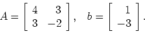
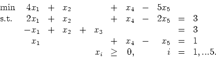
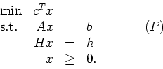
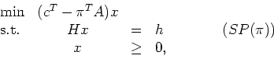
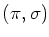

Show that this problem has unbounded objective function value by using the revised simplex algorithm starting from the basic feasible solution x = [0,2,1,1,0]T. Use the eta factorization of the inverse, so you should first factorize the initial basis B as LB=U, where L is lower triangular and U is upper triangular. On subsequent iterations, update the basis matrix by using eta matrices. What is the ray that you find? (Hint: you should find the ray on the second iteration.)

We solve this problem by Dantzig-Wolfe decomposition, so the subproblems are of the form

where  is the current dual solution to the Master Problem.
- (a)
- Assume the current subproblem has an optimal solution
 with value
v. Can you give a lower bound on the optimal value of (P)?
What does your lower bound become if
is dual feasible?
with value
v. Can you give a lower bound on the optimal value of (P)?
What does your lower bound become if
is dual feasible?
- (b)
- Suppose (P) has been solved using decomposition. How would you find the optimal dual solution to the original problem (P)?